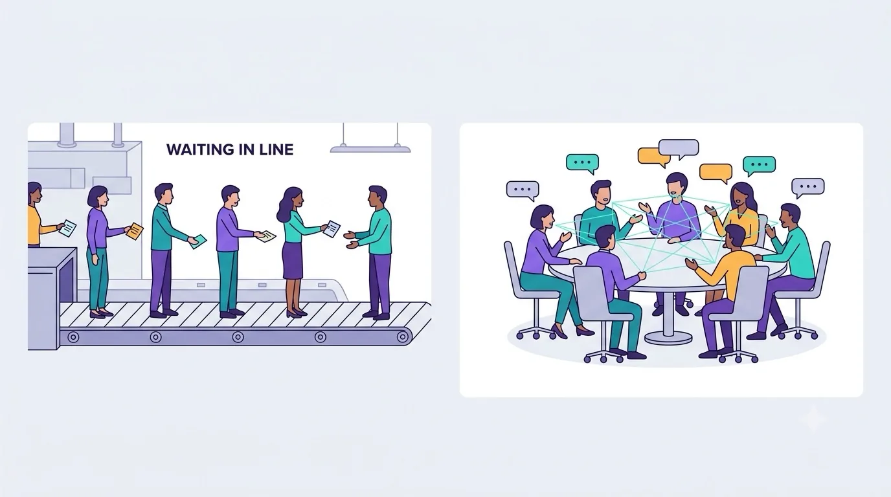

Chapter 01The Sequential Bottleneck
“The bottleneck is never where you think it is.” — an old profiling proverb
You already know what a language model does: you type a prompt, and it produces the next words. This book is about the machine underneath — and to understand why that machine looks the way it does, we have to start with the thing it was built to escape. Let's call it the sequential bottleneck.
How machines read before 2017
Before the Transformer, the state of the art in translation and language modeling was the recurrent neural network — the RNN, and its more capable cousins the LSTM and GRU. The mental model is an assembly line. The network reads a sentence one token at a time, left to right. At each step it takes in the current word plus a bundle of everything it remembers so far — a vector called the hidden state — and produces an updated bundle to pass to the next step.
It's a beautiful idea, and it works. But look closely at the dependency: to compute the hidden state at position t, you must already have the hidden state at position t−1. Which needed t−2. And so on back to the first word. The computation is a chain, and you cannot start link five until link four is finished.
The problem was never accuracy — RNNs were accurate. The problem was that their core computation is inherently sequential, and modern hardware (GPUs) is built to do thousands of things at the same time. An assembly line can't use a parallel machine. That mismatch is the whole motivation for the Transformer.
Two costs, not one
The sequential chain charges you twice. The first cost is wall-clock time during training: with a length-n sentence you need n sequential steps, and no amount of extra hardware buys you speed, because the steps depend on each other. Batching across many sentences helps, but memory limits how many you can stack, and the fundamental one-after-another constraint remains.
The second cost is subtler and, for quality, more damaging: the path length that information has to travel. Suppose the last word of a sentence depends on the first — "The keys to the cabinet ... are on the table" (the verb must agree with "keys", not "cabinet"). In an RNN, the signal from "keys" has to survive being copied and transformed through every intervening step to reach "are." Each hop is a chance to blur or forget. Long-range dependencies are exactly where the assembly line struggles most.
RNNs weren't the only game. Convolutional models (ByteNet, ConvS2S) let you parallelize across positions, which fixed the speed problem. But relating two distant words still took a stack of layers — the number of steps between them grew with their distance. The Transformer's ambition was bolder: make the distance between any two words a constant, one, regardless of how far apart they sit.
The provocation in the title
Attention mechanisms already existed in 2017 — but they were an accessory, bolted onto an RNN to help it peek back at the input. The paper's authors asked a mischievous question: what if the accessory is the whole engine? What if we remove recurrence and convolution entirely, and rely on attention alone? The title, "Attention Is All You Need," is that dare stated as fact.
The payoff was immediate and concrete. The Transformer reached a new state of the art in machine translation while training in as little as twelve hours on eight GPUs — a fraction of the cost of the recurrent and convolutional models it beat. We'll see those exact numbers in Chapter 9.

A clean, modern flat-vector editorial illustration split into two side-by-side panels on a light cool-ivory background. Left panel: several stylized figures standing single-file on a conveyor-belt assembly line, each passing one small note to the next, with the last figure waiting — labelled feeling of "waiting in line." Right panel: the same number of figures seated around a round table, every figure connected to every other by thin glowing lines, all conversing at once. Violet, teal, and amber accent palette, generous whitespace, no text baked into the image. Target size ~1280×720px, 16:9 landscape; compose with the two panels centred and safe margins — it is letterboxed into a 16:9 box, so keep nothing important near the edges.
Generate this with your image agent, then drop the file here.
So what did we actually gain?
Nothing yet — we've only named the enemy. But naming it sharply is half the battle. Everything the Transformer does is in service of two goals that the sequential bottleneck denied us: compute every position in parallel, and let any position reach any other in a single hop. Keep those two goals in your pocket. Every design choice in the coming chapters is one of them, wearing a disguise. Next, we lay the first stone: how a machine turns a word into something it can do math with.
Challenges
- An RNN processes a 50-word sentence. How many sequential steps does it take? Now do the same for a self-attention layer. Which number depends on the sentence length?
- Think of a sentence where the correct choice of a late word depends on a word near the very start. Why is that specific shape of sentence the hardest case for an assembly-line model?